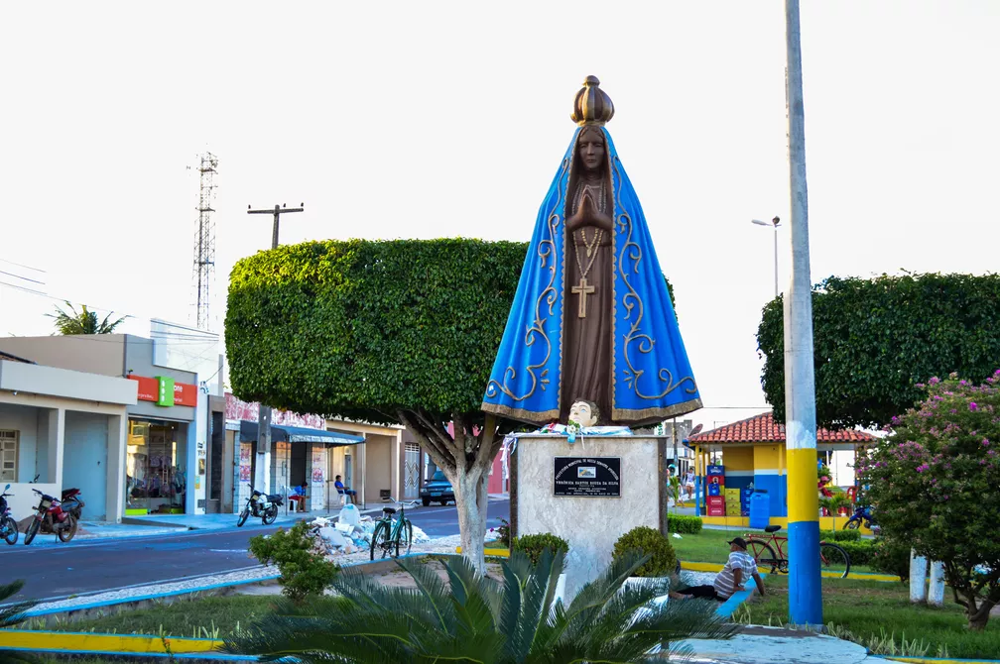

Nossa Senhora Aparecida
História
O município de Nossa Senhora Aparecida, criado em 1963, com a denominação de Cruz das Graças e sede no povoado Cruz do Cavalcante, foi desmembrado do município de Ribeirópolis. A instalação, entretanto, só ocorreu dois anos depois, com a posse do primeiro Prefeito e de cinco Vereadores. Em 1975 mudada a denominação do Município para Nossa Senhora Aparecida, sua sede foi para o povoado Maniçoba.
Em 1975 mudada a denominação do Município para Nossa Senhora Aparecida, sua sede foi para o povoado Maniçoba.
O município, com a denominação de Cruz das Graças e terras desmembradas do município de Ribeirópolis, foi criado em 26 de novembro de 1963, pelo Decreto-Lei Estadual n.° 1.233. Pela Lei Estadual n.° 165-A, de 24 de dezembro de 1975, passou ao atual topônimo. Desde sua criação até a presente data, o Município figura apenas com o Distrito-Sede, Nossa Senhora Aparecida.
Essa mudança foi noticiada até nos jornais da Capital, Segundo Barreto, a Gazeta de Sergipe registrava: “foi assinada ontem, 24/12/1975, pelo presidente da Assembleia Legislativa, Deputado Djenal Queiroz, a Lei nº 165, que transfere a sede do Município de Cruz das Graças, para o povoado Maniçoba, passando o Município e o povoado Maniçoba, a receberem o nome de Nossa Senhora Aparecida.
fonte: https://pt.wikipedia.org/wiki/Nossa_Senhora_Aparecida_(Sergipe)Pontos Turísticos
Romaria Nossa Senhora Aparecida
A tradicional festa Nossa Senhora Aparecida move milhares de pessoas durante todo o ano, mais ainda durante o período festivo da cidade. Todo essa devoção das-se após a realização de um milagre que foi alcançado através da Padroeira do Brasil. Devido a esse milagre até o nome do município foi mudado de Manissoba para o nome atual de Nossa Senhora Aparecida.
Dados Gerais de acordo com o IBGE
| Prefeito (a) | Jeane de Jesus Barreto |
| Vice-Prefeito (a) | Edson Aparecido Barreto Melo |
| Site do município | https://nossasenhoraaparecida.se.gov.br/ |
| Área territorial | 340,378 km² |
| População estimada | 8.510 pessoas |
| Densidade demográfica | 25 hab./km² |
| IDHM | 0,577 |
| PIB per capita | R$ 5.663,19 |